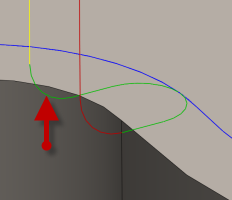

<div id="exit_verticalRadius"><p>Specifica il raggio dello svincolo in uscita verticale.</p>
<table class="tipTable" cellspacing="10">
<tr>
<td><center></center></td>
</tr><tr>
<td><center><p><b>Raggio in uscita verticale</b></p></center></td>
</tr></table>
</div>